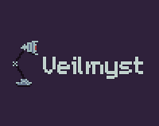
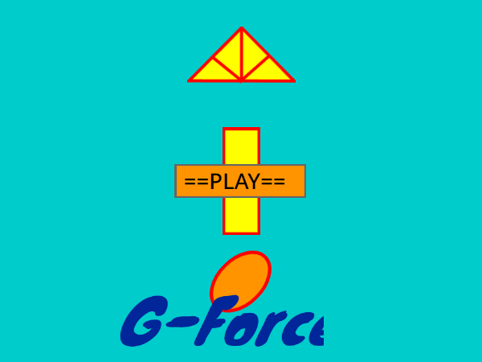

About Me
I am a Computer Engineer currently pursuing my Masters at NYU. I completed my Bachelor of Technology in
Computer Engineering at Delhi Technological University in June 2023. My interests lie in various fields,
ranging from natural language processing to game development and web development. To further my knowledge
on these topics, I have participated in competitions and seen to completion of many projects from as early as high school.
Throughout my life, I have experienced a multitude of cultures that have shaped me and my understanding of the world.
Being an Indian who spent seven years of his life in France, I was exposed to a culture and lifestyle completely different
from the one in which I grew up. Furthermore, going to an international school has helped me grasp the similarities and
differences that cultures from all over the world have as well as understand how to respectfully treat someone from a
culture I am new to. Living in France also exposed me to the French language.
Currently, I am working at the Game Innovation Lab at NYU. I am working on a project that incorporates both game design and
artificial intelligence. I am building upon the 5 dollar model that was developed at the lab last year.
Skills
- Programming Languages: C, C++, C#, Python, JavaScript
- Game Engines: Unity, Unreal Engine, Scratch
- Design Tools: Blender
- Other Skills: Artificial Intelligence, Embedded Systems, Computer Architecture
Projects
Project 1: Veilmyst

Role: Mechanic Design
Technologies Used: Unity 3D
Veilmyst is a 2D platformer inspired by Celeste. The game was made in a 4-man group as a project for the Game Design course at NYU Tandon.
You play as a man in a hazmat suit. The goal of the player is to make their way through a level and dash into an orb while
collecting crowns. The game has 9 main levels and 2 bonus levels. You can fight some enemies and there are additional game
mechanics added in later levels.
View Game/Demo
Project 2: G-Force

Role: Solo Developer
Technologies Used: Scratch
G-Force is a 2D platformer with gravity changing mechanics. It is one of the games I made during high school.
You play as a square and your goal is to reach a star. The game has 10 levels with each level introducing some
new mechanics or asking the player to innovate their problem solving skills.
View Game/Demo
Research Papers
Paper 1: Solving Arithmetic Word Problems Using Block Recurrent Transformer
Publication: ICCCNT
Recent improvements in deep learning techniques have shown promising results in solving arithmetic word problems. The Block Recurrent Transformer (BRT) is a neural network architecture that coagulates the benefits of transformers and recurrent neural networks (RNNs). This paper investigates the use of BRT for arithmetic problem-solving and compares its performance with other state-of-the-art methods. Furthermore, a detailed description of the methodology that evaluates the performance of BRT on a dataset of arithmetic word problems is given. Our results show that BRT outperforms other methods and reaches state-ofthe-art performance.
View Paper